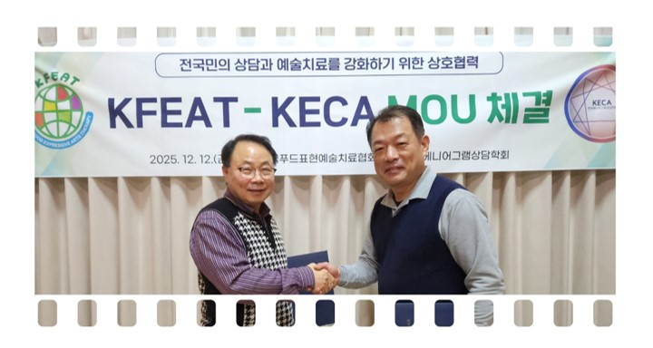
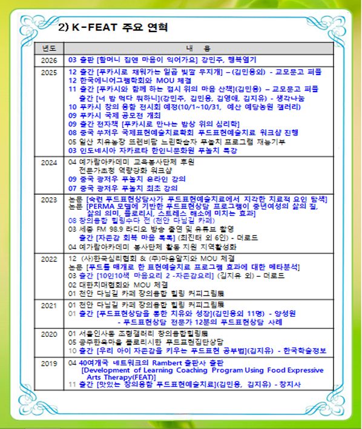
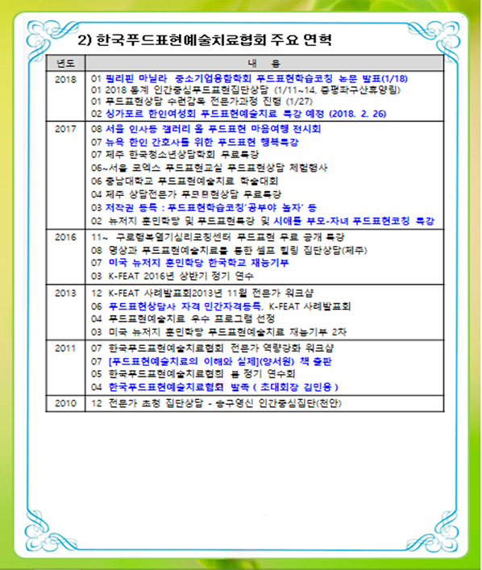
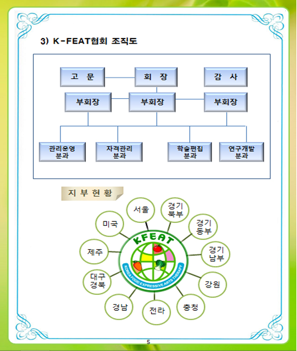
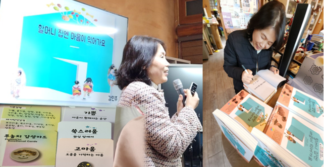
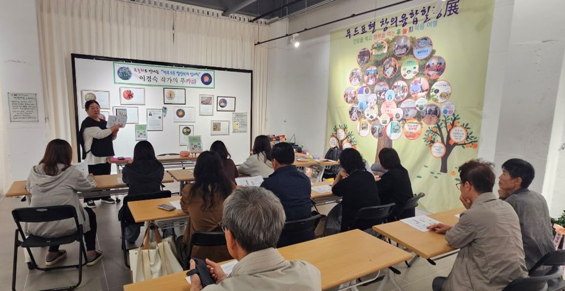

FEAT는 건강하고 아름다운 세상을 위해 함께 합니다.

한국푸드표현예술치료협회는 표현예술치료의 한 분야인 푸드표현예술치료를 연구/발전시키고 실제 삶의 현장에 적용 및 응용함으로써 건전한 사회와 행복한 가정을 이루어 가는데 협력하고 있습니다. 건강한 개인의 자기실현의 욕구를 달성하기 위한 심리 정서적 안정을 만들어 가는데 함께 하며, 삶의 치유예술을 목적으로 하는 비영리 단체입니다. K-FEAT협회 회원님들의 많은 관심과 참여를 기다리겠습니다. 협회 회원님들의 성장과 발전을 위하여 최선을 다하는 협회가 되도록 더욱 노력하겠습니다. 감사합니다.. 협회장 김민용 拜
지식정보화 시대 창의융합적인 건강한 개인을 양성하고 건강한 개인이 건강한 가정을 형성하고 나아가 건강하고 아름다운 사회를 만들어 나가는데 일조하며, 더불어 다함께 잘사는 지구촌 가족을 만들어 가는데 협력하며 공헌하는 단체가 되도록 연계함




푸드표현예술치료(FEAT)의 정의

푸드표현예술치료는 음식(Food)재료를 매체로 우리의 오감을 자극하는 조형활동을 하며 지금-여기에서의 마음을 표현하는 과정을 통해 스스로 자기통찰을 경험하고 심리, 정서적 문제를 치료해 가는 통합적 표현예술치료의 한 장르이다. 푸드표현예술치료는 일상에서 늘 대하는 음식재료를 사용하여 만지고 다듬고 때로는 먹으며 심리적인 안정감을 찾아가도록 돕는다. 오감을 자극해 깨워내는 무의식과의 소통 과정 속에서 표현되어지는 푸드표현예술작품은 스스로에게 잊혀져 있던 자신의 참모습을 보게 하고, 본래의 온전한 자신의 모습으로 돌아와 심신의 건강함과, 영성의 통합으로 회복하도록 자극하며 선한 영향력을 나눌 수 있도록한다.
가. 몸과 마음의 조화로운 건강유지 나. 항상성을 통한 삶의 균형감각 개발 다. 창의적 문제해결력 향상. 라. 예술적(미적) 감각 향상을 통한 心力 향상. 마. 잠재능력을 개발을 통한 융합적 사고 확장. 바. 재료의 지배능력과 선택성을 통한 합리적 적극적인 생활태도 함양
